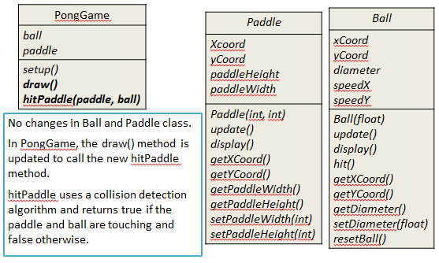
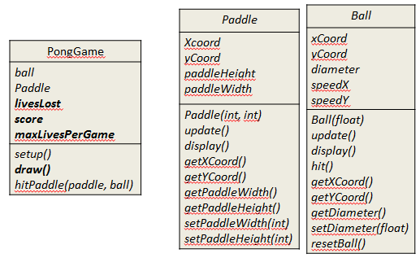
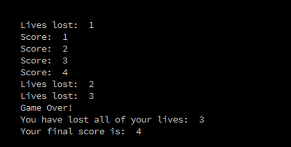
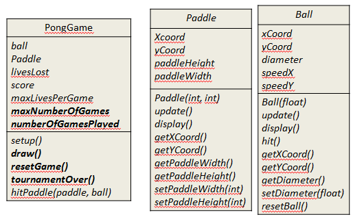
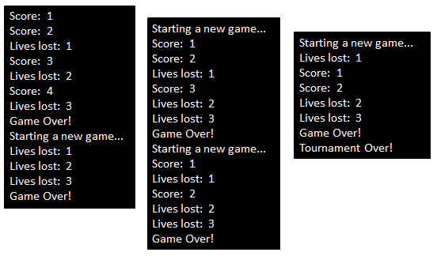

PongGame V3.0 · PongGame V4.0 · PongGameV5.0
On completion of this lab you should be very familiar with the game of pong and have included collision detection code for the Ball and Paddle class. You should see the game evolve through maintaining tournaments, lives lost and scores for the game. In this lab, you will work on PongGameV3.0, PongGameV4.0 and PongGameV5.0.
Having read the lecture on PongGameV3.0 we will now develop it.
This version of the game adds collision detection between the Ball and the Paddle.

Open your solution to ''PongGameV2_0''. A copy of the V2 solution is here, if you need it.
Save it as ''PongGameV3_0''
In the PongGameV3_0 class/main tab, add the following hitPaddle method:
//method returns true if the ball and paddle overlap (i.e. ball is hit), false otherwise.
boolean hitPaddle(Paddle paddle, Ball ball)
{
//These variables measure the magnitude of the gap between the paddle and the ball.
float circleDistanceX = abs(ball.getXCoord() - paddle.getXCoord());
float circleDistanceY = abs(ball.getYCoord() - paddle.getYCoord() - paddle.getPaddleHeight()/2);
//The Ball is too far away from the Paddle on the X axis to have a collision, so abandon collision detection
if (circleDistanceX > (ball.getDiameter()/2)) {
return false;
}
//The Ball is too far away from the Paddle on the Y axis to have a collision, so abandon collision detection
if (circleDistanceY > (paddle.getPaddleHeight()/2 + ball.getDiameter()/2)) {
return false;
}
//We have a collision!
return true;
}In the draw method, after the ball.display() method call, insert the following code:
//Set variable to true if ball and paddle are overlapping, false if not
boolean collision = hitPaddle(paddle, ball);
if (collision == true){
ball.hit(); //the ball is hit i.e. reverses direction.
}Run your code.
The ball functionality should not have been affected. It still should:
traverse the screen left to right.
when it reaches the right hand side, disappear off screen and a new ball should appear in a random lcoation on the left hand side.
when re-appearing, traverse the screen in a random trajectory at a random speed.
The paddle functionality should not have been affected. It should still:
be pinned to the right hand side of the window
move on it's vertical plane in accordance with the movement of the mouse pointer.
You should now have collision detection built into the code. Test that the paddle now hits the ball when they touch.
If your code is not working, the solution can be found here.
Having read the lecture on PongGameV4.0 we will now develop it.
Make sure that you read and understand the code below, while typing it into the relevant class. If you have any questions on any part of the code, make sure to ask your lecturer.

In this version, we want to store the game information such as the number of lives lost, the maximum lives allowed per game and the score of the game. The game will end when the user loses the number of lives allowed per game.
Open your solution to ''PongGameV3_0''.
Save it as ''PongGameV4_0''
In the PongGameV4_0 class, add the following global variables to store the game information:
//Current game data
int livesLost = 0; //keeps track of number of lives lost in current game
int score = 0; //high score of the current game
int maxLivesPerGame = 3; //maximum number of lives that can be lost
//before the game endsIn the draw() method, change the call to the ball.update() method to be:
// Update the ball position. If true is returned, the ball has left the display
// window i.e. a life is lost
if (ball.update() == true){
livesLost++;
println("Lives lost: " + livesLost);
}In the draw() method, replace this version 3.0 code:
//VERSION 3.0 code.
//Draw the ball at its new location and check for a collision with the paddle
ball.display();
//Set variable to true if ball and paddle are overlapping, false if not
boolean collision = hitPaddle(paddle, ball);
if (collision == true){
ball.hit(); //the ball is hit i.e. reverses direction.
}with the version 4.0 code:
//If the player still has a life left in the current game,
//draw the ball at its new location and check for a collision with the paddle
if (livesLost < maxLivesPerGame){
ball.display();
//Set variable to true if ball and paddle are overlapping, false if not
boolean collision = hitPaddle(paddle, ball);
if (collision == true){
ball.hit(); //the ball is hit i.e. reverses direction.
score++; //increase score in the current game by 1, if the player hit the ball.
println("Score: " + score);
}
}
//The player has no lives left so the game ends
else{
println("Game Over!");
println("You have lost all of your lives: " + livesLost);
println("Your final score is: " + score);
exit();
}Run your code.
Your output should be similar to this:

Make sure you understand the code before moving onto PongGameV5_0.
If your code is not working, the solution can be found here.
Having read the lecture on PongGameV5.0 we will now develop it.
Make sure that you read and understand the code below, while typing it into the relevant class. If you have any questions on any part of the code, make sure to ask your lecturer.

In this version, we want to store the tournament information such as the number of games in a tournament and the number of games played so far in the tournament.
Open your solution to ''PongGameV4_0''.
Save it as ''PongGameV5_0''
In the PongGameV5_0 class, add the following global variables to store the tournament information:
//Tournament data
int maxNumberOfGames = 5; //maximum number of games in a tournament
int numberOfGamesPlayed = 0; //num of games played, so far, in a tournamentIn the draw() method, replace the ''else'' portion relating to this if statement:
if (livesLost < maxLivesPerGame){with this code:
//The player has no lives left so the game ends
else{
numberOfGamesPlayed++;
//If the player has more games left in the tournament,
//display their score and ask them if they want to continue with tournament.
if (numberOfGamesPlayed < maxNumberOfGames){
resetGame();
}
else{
//the player has no more games left in the tournament
tournamentOver();
}
}In the PongGameV5_0 class, add this new method:
// This method prepares for the next game by resetting the variables
// that store the current game information.
void resetGame()
{
println("Game Over!");
println("Starting a new game...");
livesLost = 0; //resets the lives lost in the current game to zero
score = 0; //resets the score of the current game to zero
}In the PongGameV5_0 class, add this new method:
// This method displays the player information, before exiting the program.
void tournamentOver()
{
println("Game Over!");
println("Tournament Over!");
exit();
}Run your code.
Your output should be similar to this:

Make sure you understand the code before moving onto PongGameV6_0.
If your code is not working, the solution can be found here.